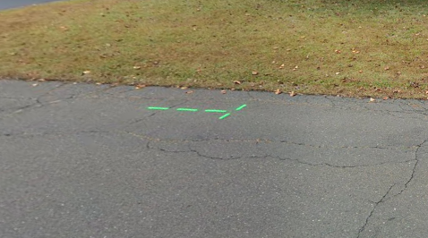
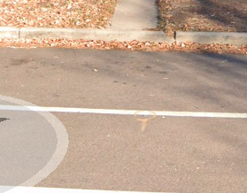

Read-Only Historical Archive — Posting and registration are permanently closed.
During the "too cold to measure" season, we’ve been laying down calibration courses because some expired and some are needed for measurements not near an existing calibration course. Just for grins, after measuring 30+ calibration courses over the years, I decided to check the measurement manual (online version). I found that it recommends marking the 2nd steel tape measurement of the course on separate masking tape (the manual calls it duct tape in places). Does anyone do this?
We always mark the 2nd steel tape measurement on the same piece of masking tape that has the 1st set of marks. We use a line with a small arrowhead for the 2nd set of marks (no arrowhead for the 1st set).
Another nit. The Steel Taping Data Sheet asks for partial tape lengths. This is fine if measuring with a 60-ft tape, but if using a 100-ft tape for a 1000-ft calibration course, is there ever a partial tape length? The 2nd steel tape measurement should be measuring the same distance as the 1st steel tape measurement, not the distance between marks.
The intent was to replace all instances of "masking" with "duct" since masking tape does not stick well to pavement. Obviously, we missed several "maskings." That will be corrected in a mid-year update.
My calibration courses usually go from one fixed landmark to another fixed landmark (such as a pavement expansion joint or the edge of a storm drain), and are not an even 300m or 1000ft in length. In that case you always have a partial tape length. It also means I always have a separate set of duct tapes for the second measurement.
Like your example when pulling a fixed distance cal course (say 1000') I've never used a second price of tape to record the second mark. I usually put a large enough piece of white gorilla tape down to record both marks. I find it helpful to use a different colored marker to record the second set of marks on the tape
OK, I get the partial tape for some measurements. I also understand that 2 sets of tapes is OK for measuring between fixed points. But for a standard distance calibration course there are advantages to using a single set of tapes. One is that it's easy to determine the difference between full course measurements. Another is that slippage of the tape at the held end is easier to detect.
For cal courses that are an even number of tape lengths, this is a moot point. If you put down a second set of duct tapes they are going to be in the same place as the first set, and there is no reason to do that. Since many people do 300m or 1000ft cal courses, that statement in the manual could be confusing.
For courses that include a partial tape length, using 2 sets of duct tapes has the advantage of being closer to a "blind-blind" process, i.e., you don't get to see how the comparison is going DURING the second measurement, only at the end. But that's a small thing that may not be worth dealing with all the extra pieces of tape. I use a 100m tape, so a second set means only 3 extra pieces of tape. No big deal. For someone with a 100ft tape it's a lot of extra tape pieces.
That statement in the manual is from the original, not something that was added in the last couple versions. No one suggested changing it until now. Maybe in the next version.
No intention to besmirch the manual, just a discussion.
From the manual: "Thus, the second measurement should result in a number indicating the distance between your original endpoints (not in a new set of endpoints)."
It seems that this number is easier to obtain if the endpoint marks are on the same piece of tape.
Thanks for all the comments.
The manual suggests to use a second set of tapes only for the intermediate points. Only one piece of tape, and one mark, for the endpoints.
"Use a new set of intermediate taping points (new pieces of masking tape) for the second measurement."
No problem with making suggestions for manual changes. There were many things that were out of date with current practice (using paper topological and scale maps, for example). There are probably some things like that that were missed.
Good discussion about cal courses. Measuring a cal course is the time when the perfectionists among us can take center stage. When Tom Riegel responded to an inquiry about some way to measure a course to surveyor's standards with the retort "We don't measure to that level of accuracy", he obviously wasn't referring to cal courses. I know of one big race that was marred (way short) by a measurement done based on what was revealed to be a faulty cal course.
For the last cal course I certified, in 2016, I was lucky enough to have one experienced team member and one helper. We used a 300' steel tape to measure a 1,000 foot course, so one partial. Having the helper made it easy to keep the tape flat and straight, and to keep track of the marks on the tape. I use white or yellow Shurtape, which is perfectly suited for this.
Somewhat off topic, but when researching coordinates for the Cal Course database on GoogleMaps, thought it was cool that the endpoints were visible in the Street View photos of two of them.


[@mention:585516546019931359], is that second pic from a Denver course? Looks like the yard where we placed the east end of a Cal Course, where the gentleman chatted with us.
It is indeed Duane! I freshened up the paint when I was there last summer.